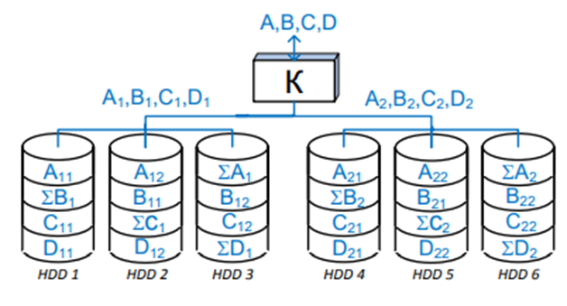

RAID
RAID (Redundant Arrays of Independent Discs, избыточный массив независимых дисков) – это технология объединения двух и более HDD в управляемый контроллером массив, на который возлагается задача обеспечения отказоустойчивости и (или) повышения производительности.
Отказоустойчивость достигается за счет избыточности. То есть часть емкости дискового пространства отводится для служебных целей, становясь недоступной для пользователя.
Повышение производительности дисковой подсистемы RAID обеспечивается одновременной работой нескольких дисков, и в этом смысле, чем больше дисков в массиве (до определенного предела), тем лучше.
Работу дисков в массиве можно организовать с использованием либо параллельного, либо независимого доступа.
При параллельном доступе дисковое пространство разбивается на блоки (полоски, stripe) для записи данных. Аналогично данные, подлежащие записи на диск, разбиваются на такие же блоки. При записи отдельные блоки записываются на различные диски, причем запись нескольких блоков на различные диски происходит одновременно, что и приводит к увеличению производительности в операциях записи. Требуемые данные также считываются отдельными блоками одновременно с нескольких дисков, что также способствует росту производительности пропорционально количеству дисков в массиве.
Следует отметить, что модель с параллельным доступом реализуется только при условии, что размер запроса на запись данных больше размера самого блока. В противном случае реализовать параллельную запись нескольких блоков просто невозможно.
Если же размер записываемых данных меньше размера блока, то реализуется принципиально иная модель доступа – независимый доступ. Более того, эта модель может быть реализована и в том случае, когда размер записываемых данных больше размера одного блока.
Преимущество модели с независимым доступом в том, что при одновременном поступлении нескольких запросов на запись (чтение) все они будут выполняться независимо, на отдельных дисках. Подобная ситуация типична, например, в серверах.
Для повышения отказоустойчивости массивов используют избыточное кодирование. Существует два основных типа кодирования, которые применяются в избыточных дисковых массивах – это дублирование и чѐтность.
RAID 0. Дисковый массив с чередованием без отказоустойчивости/чѐтности
Является массивом (рисунок 4.18), где данные разбиваются на равные блоки (размер блока можно задавать при создании массива) и равномерно записываются на все диски по очереди (на два или несколько дисков): один блок данных на один диск, второй блок данных на другой диск и т. д.. Эти блоки называются страйпами, отсюда и сам RAID 0 часто именуют страйпом.
RAID 1. Дисковый массив с дублированием
RAID 1, известный как «зеркало», представляет собой другую крайность (рисунок 4.19). Он максимально избыточен – в нем производится 100 % дублирование данных. Этот процесс «съедает» ровно половину объема массива. Число дисков в нем, соответственно, четное. Позволяет увеличить скорость чтения, но синхронная скорость записи в некоторых случаях падает. При отказе одного из дисков работа автоматически продолжается с дублером.
RAID 3. Отказоустойчивый массив с параллельной передачей данных с битовым чередованием и чѐтностью
RAID уровня 3 – это отказоустойчивый массив с параллельным вводомвыводом и одним дополнительным диском, на который записываются контрольные данные.
При записи поток данных разбивается на блоки (страйпы) на уровне байт (хотя возможно и на уровне бит) и записывается одновременно на все диски массива, кроме выделенного для хранения контрольных данных.
Для вычисления контрольных данных (называемой также контрольной суммой) используется операция «исключающего ИЛИ» (XOR), применяемая к записываемым блокам данных.
Если имеется последовательность бит 1101001111001011, разбитая на блоки по четыре бита, то для расчета контрольной суммы необходимо выполнить операцию: 1101(XOR)0011(XOR)1100(XOR)1011 = 1001. Таким образом, контрольная сумма, записываемая на пятый диск, равна 1001.
RAID 5. Дисковый отказоустойчивый массив с чередованием и распределѐнной чѐтностью
Данные записываются в страйпы на все диски кроме одного, на котором размещается контрольная сумма этой части данных. Запись этого блока (контрольной суммы) также чередуется между всеми накопителями, распределяя равномерную нагрузку. Если их больше четырех, то скорость чтения будет выше чем в RAID 1, но запись будет осуществляться медленнее.
Контрольные суммы позволяют восстановить данные в случае выхода из строя одного из дисков. Сама операция восстановления вызывает повышенную нагрузку на оставшиеся диски. Значительно падает производительность и растѐт риск утери всех данных в случае отказа еще одного диска.
RAID 5 имеет архитектуру независимого доступа, то есть в отличие от RAID 3 здесь предусмотрен большой размер логических блоков для хранения данных. Поэтому основной выигрыш такой массив обеспечивает при одновременной обработке нескольких запросов.
Двухуровневые RAID
Так RAID 10 – это RAID 0, у которого элементами (каналами) являются RAID 1.
RAID 10. Отказоустойчивый массив с параллельной обработкой и дублированием
В большинстве случаев RAID 10 обеспечивает лучшую производительность и меньшую «заторможенность», чем все другие уровни RAID, за исключением RAID 0 (который работает еще быстрее). Это один из наиболее предпочтительных вариантов при использовании ресурсозатратных приложений, где высокая скорость операций – основное требование к системе.
RAID 01. Отказоустойчивый массив с дублированием и параллельной обработкой
RAID 01 быстрее, чем RAID 10. Все дело в двух RAID 0 массивах, на которые записывается каждая копия данных. Вспомним принцип работы RAID 0: скорость достигается за счет чередования – данные разделяются на «полосы» и записываются на накопители одновременно.
RAID 50. Отказоустойчивый массив с распределенной четностью и повышенной производительностью
RAID 50 (также известный как RAID 5 + 0) – это также двухуровневый RAID. Он предствляет собой RAID 0, у которого элементами (каналами) являются RAID 5 (рисунок 4.23). Соответственно RAID 5 и RAID 0 обеспечивают высокие скорости записи и загрузки. Массивы такой конфигурации используются довольно часто.
Для работы RAID 50 требуется как минимум шесть дисков. По мере увеличения количества дисков в RAID 50 его производительность также растет, что оказывает соответствующее влияние на скорость восстановления данных по мере увеличения интервала (шага) восстановления RAID.
Чтобы потерять данные в массиве RAID 50, должны выйти из строя сразу три диска, что практически невозможно.
Физическая топология RAID
Поэтому при разной логической топологии все RAID имеют одинаковую физическую топологию – "звезда".
По исполнению RAID-контроллеры подразделяются на:
Аппаратный RAID – формируется с помощью отдельного контроллера с собственным процессором и кэширующей памятью, полностью забирающий на себя выполнение всех дисковых операций. Наиболее затратный, однако, самый производительный и надежный вариант для использования.
Программный RAID – наименее затратный вариант, но и наименее производительный. Массив создается средствами операционной системы, вся нагрузка по обработке данных «ложится на плечи» центрального процессора.
Интегрированный аппаратный RAID (еще его часто называют FakeRAID) – микрочип, установленный на материнскую плату, который берет на себя часть функционала аппаратного RAID-контроллера, работая в паре с центральным процессором. Этот подход работает чуть быстрее, чем программный RAID, но надежность у такого массива оставляет желать лучшего. Обычно поддерживают RAID базовых уровней и даже некоторые двухуровневые.
Технология Hot Spare (горячее резервирование)
Для восстановления полноценной работоспособности RAID необходимо обеспечить восстановление данных на одном (нескольких) резервных HDD. Это реализует технология Hot Spare
Технология Hot Swap (замена "на лету")
Но если даже кратковременная остановка системы или вмешательство в нее не желательно, то необходимо применить технологию Hot Swap, которая позволяет заменять неисправные дисководы (и не только их) не выключая системы.